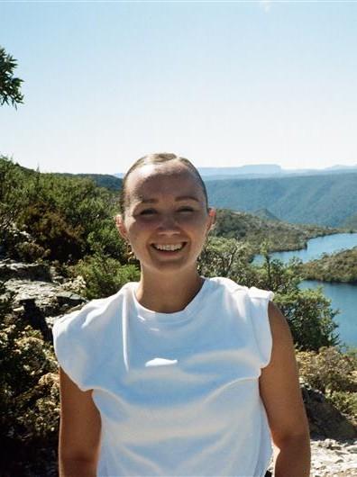
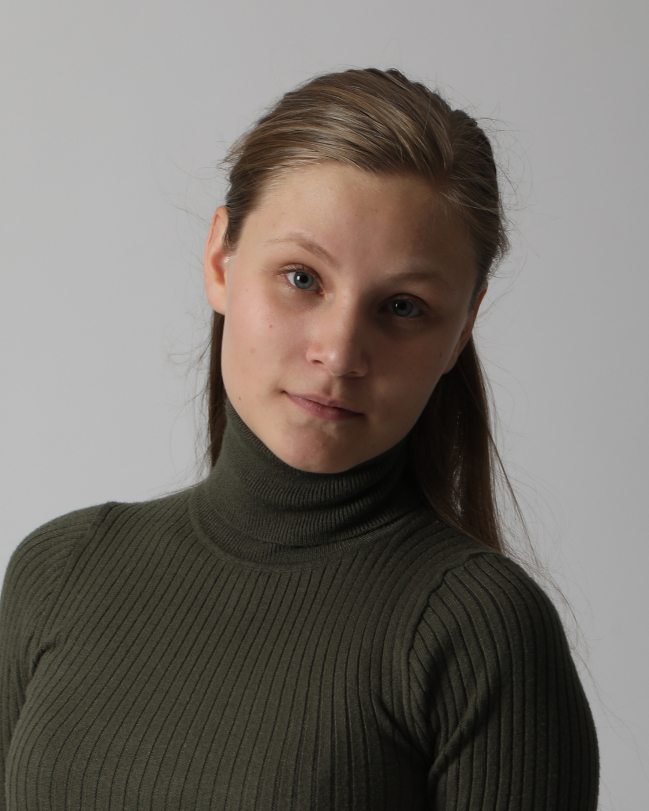

People
Dr Ciara McGrath is a Lecturer in Aerospace Systems at the University of Manchester, United Kingdom, with expertise in Astrodynamics and Space Mission Design. She is the Institution of Engineering and Technology (IET) Young Woman Engineer of the Year 2021, and has appeared on TV, radio, and podcasts, and given a TEDx talk, promoting engineering and the space industry to a wide audience. She has worked in the space industry in the Republic of Ireland, the United Kingdom, Germany, and the Netherlands, and in 2017 was a visiting Fulbright Scholar at the Massachusetts Institute of Technology (MIT), USA.
John Mackintosh is a postgraduate researcher at the University of Manchester, specialising in modelling in-orbit impact risk and mission utility. His work has received national recognition, with coverage from the BBC and the IET. He is the author of an industry-partnered report with Callala, exploring Earth-based environmental impacts of satellite manufacture and launch, alongside the development of space-specific Life Cycle Assessment (LCA) methodologies. This research was presented at the Manchester Sustainable Futures Seminar Series. John has presented his work internationally, including at the 74th and 76th IAC, and the 32nd CIRP. He is particularly interested in orbital capacity and the application of ESG principles within the space sector, aiming to support more sustainable and responsible use of the orbital environment.

Belén López Pardo is a postgraduate researcher at the University of Manchester specialising in Astrodynamics and Interplanetary Mission Design. Her research focuses on bridging the gap between high-fidelity physics and computational efficiency by developing novel architectures to evaluate complex environmental perturbations—including third-body dynamics and solar radiation pressure—without the prohibitive overhead of traditional numerical methods. Her work has been presented at premier global venues including the AAS/AIAA Astrodynamics Specialist Conference 2025 and the 75th International Astronautical Congress (IAC). Belen has successfully translated her theoretical expertise into industrial impact, notably engineering bespoke geometric solvers for satellite thermal modeling as a consultant for ESR Technology Ltd. An AFHEA-qualified educator, she has served as a Graduate Teaching Assistant and PASS leader, and has mentored and led undergraduate projects in the field of aerospace dynamics. Her leadership has been further demonstrated through her participation in ESA Ladybird Course 2022 and as a lead for the University of Manchester CanSat team. She was awarded the Royal Aeronautical Society (RAeS) Teddy Fielding Award and won first prize for Best Presentation at the 2023 PGR Conference, underscoring her commitment to technical excellence and effective scientific communication.
Shalom Treblow is a Post Graduate Researcher in Aerospace Systems at the University of Manchester with expertise in Astrodynamics and Space Mission Design, His prior work has been published by the AIAA Journal of Spacecraft and Rockets. Shalom Treblow holds a 1st Class Masters Degree in Aerospace Engineering from the University of Manchester and received the Best Student Award in 2023. His research aims to use an analytical approach to develop elegant and adaptable solutions that enables the collection of vital data needed on Earth by way of small Reconfigurable Satellite Constellations.

Carys Thomas is a postgraduate researcher at the University of Manchester, working on evaluating the space industry's current and future impacts on climate change and identifying areas for positive change. They presented their work on quantifying a criterion for a net-positive active debris removal mission and space debris ranking model at the 76th International Astronautical Conference (IAC 2025) in Sydney, Australia. Carys’ research focuses on the environmental impact of space missions and their human impacts.
Mairi Johnston is a PhD student at the University of Manchester. Her research explores a range of the environmental impacts of the space industry, with particular focus on satellite design. Mairi’s recent work includes a comprehensive Life Cycle Assessment of the University of Manchester’s SOAR CubeSat, informing the long term development of simplified Life Cycle Assessment methodology to quantify the terrestrial impacts of the space industry. Having attended ESA Academy’s Space Debris Training Course 2025, Mairi is also interested in the interactions between in-space and on-Earth dimensions of space sustainability.